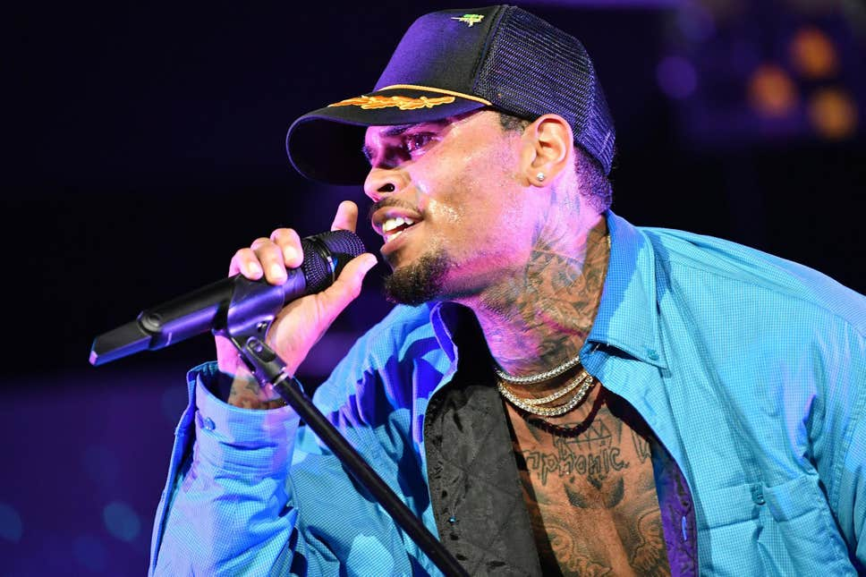

Chris Brown: Battery charges dropped after alleged attack in Florida
Singer has faced a number of charges over the past few years
Chris Brown performs at 2018 BET Experience Staples Center Concert, sponsored by COCA-COLA, at LA Live on 22 June, 2018 in Los Angeles, California.
(Photo by Earl Gibson III/Getty Images for BET) )
Charges of felony battery against US singer Chris Brown have been dropped, one year after he was arrested after a concert in West Plam Beach, Florida.
The incident involved an alleged attack at a nightclub in Tampa in 2017.
Brown was accused of punching the club's photographer, who was reportedly taking pictures of him after being told not to.
Chris Brown Streams His Way to No.1 With 'Indigo'
The R&B singer's 32-track album featuring a collaboration with Drake beat out a new release by the Black Keys, which opened at No.4. The R&B singer Chris Brown reached No. 1 on the Billboard album chart this week with his new release, “Indigo,” while the rock band the Black Keys opened at No. 4 with their first album in five years, “Let’s Rock.”
“Indigo” (RCA) opened at the top with the equivalent of 108,000 sales in the United States, according to Nielsen. Like many artists these days, Brown offered copies of his album as part of sales bundles with concert tickets and merchandise, but the success of his album came largely from streaming. His total sales number, as computed by Billboard and Nielsen, includes 98 million streams and just 28,000 copies sold as a full album. (His streaming number may have been helped by the fact that the album contains 32 songs.) While to much of the wider public Brown remains tainted by his arrest in 2009 for assaulting Rihanna — he was sentenced to five years’ probation and community service for that offense — Brown has remained consistently popular, particularly among R&B and hip-hop fans. His first two No. 1 albums — “F.A.M.E.” and “Fortune” — came in the years after that arrest, and his singles have frequently dotted the Top 10; “No Guidance,” a track from “Indigo” that features Drake, went to No. 9 on the Billboard Hot 100 singles chart and No. 5 on the R&B chart. Also on the chart this week, Lil Nas X’s debut EP, “7,” holds at No. 2, while Billie Eilish is No. 3 with “When We All Fall Asleep, Where Do We Go?”